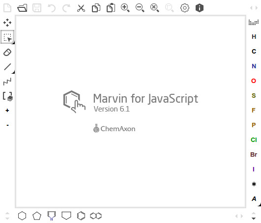
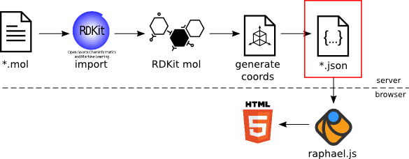

Michał Nowotka
ChEMBL Group
EMBL-EBI
Unspecified vulnerability in the Java Runtime Environment (JRE) component in Oracle Java SE 7 Update 21 and earlier, 6 Update 45 and earlier, and 5.0 Update 45 and earlier, and OpenJDK 7, allows remote attackers to affect confidentiality, integrity, and availability via unknown vectors related to 2D. NOTE: the previous information is from the June 2013 CPU. Oracle has not commented on claims from another vendor that this issue allows remote attackers to bypass the Java sandbox via vectors related to “Incorrect image attribute verification” in 2D.
Java enabled browsers are highly vulnerable(
thehackernews.com, 27-03-2013)Firefox 26 Released With On Demand Java Plugin Feature(
omgubuntu.co.uk, 10-12-2013)Apple updates Safari web plugin blocker to disable new Java vulnerability(
9to5mac.com, 29-08-2013)
Curation Interface detects Java availability and decides at runtime, which version to load.

ChEMBL contribution to RDKit:
https://github.com/rdkit/rdkit/pull/124/files
Use cases:
Stack Overflow question:
How does Trello access the user's clipboard?
_.defer =>
$clipboardContainer = $("#clipboard-container")
$clipboardContainer.empty().show()
$("<textarea id='clipboard'></textarea>")
.val(@value)
.appendTo($clipboardContainer)
.focus()
.select()
Append invisible textarea, fill it with molfile, set focus, select whole text when user press Ctrl.
RDKit and OSRA in Bottle on Tornado
Beaker is to RDkit like Sorl to Lucene.
Beaker is to RDkit like aquarium to fish.
curl -X POST http://beaker/ctab2image -F filedata="@out.mol" > out.png
curl -X POST http://beaker/image2ctab --data-binary "@aspirin.jpg" > out.mol
curl -X POST http://beaker/smiles2ctab --data-binary "@a.smi"
curl -X POST http://beaker/smiles2ctab --data "CNc1ncnc2c1ncn2Cc1cccc(F)c1F
curl -X POST http://beaker/inchi2inchiKey --data "InChI=1S/C2H6O/c1-2-3/h3H,2H2,1H3"
Better example: Clippy
Beaker code is available as github repository:
https://github.com/mnowotka/chembl_beaker
Questions?